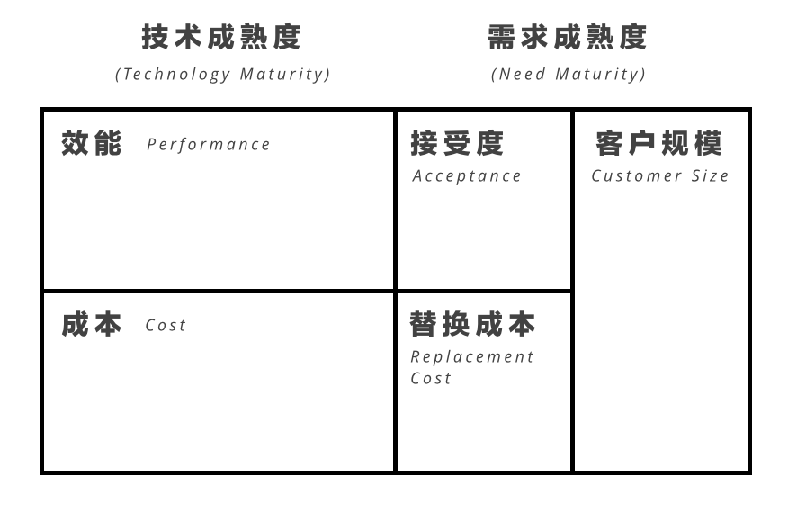
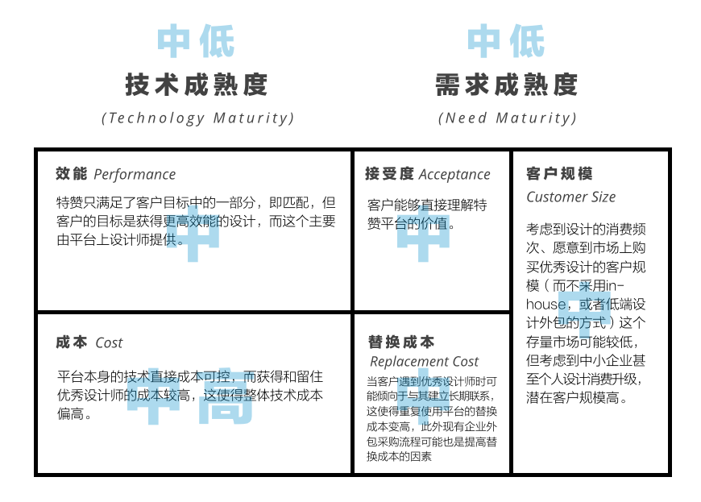

Jay Paap与Ralph Katz在2005年一篇获奖论文《Predicting the "Unpredicatable" - Anticipating Disruptive Innovation》中这样描述创新：
(Innovation) is the intreplay between new and old needs, and new and old techologies（创新是新旧需求与新旧技术的交织）
深入理解「交织（Interplay）」帮助我们深入理解创新的模式。这里我提出一个新的概念——「成熟度」以取代简单的「新旧」。对于技术而言成熟度等于效能除以成本，而对需求成熟度而言，则等于接受度和单位成本的比值乘以消费者规模。
技术成熟度
技术成熟度的核心元素是效能和成本：
- 效能：技术完成用户目标的能力（多大程度上实现效率、质量、体验、成本、时间等目的），以及对整个系统能力的提升；
- 成本：实现该技术的直接成本，以及为了突破外部限制所产生的间接成本。
例如，评价电动车技术的成熟度：
- 效能：对完成用户目标的能力而言，电动车的效能似乎很难被消费者直接体会，甚至更差，例如大城市的充电柱体验、冬天的暖气问题；但电动车技术可能提升整个城市交通和环境等系统的效能；
- 成本：实现该技术的直接成本较高，同时外部限制的间接成本也非常高，例如相关政策、充电设施的建设、现有能源结构的阻力等。
因此电动车技术的成熟度依然较低，特别指出的是，越是对宏观系统产生效能提升的技术，收到现有系统的限制就越大，因此付出的间接成本就越高，反而抵消了这部分效能对成熟度的贡献。
需求成熟度
需求成熟度的核心元素有接受度、替换成本和客户规模：
- 接受度：目标消费者多大程度上能够理解这个产品所带来的直接效能的程度；
- 替换成本：目标消费者替换现有技术（实现相同用户目标）的成本；
- 客户规模：实现某相同用户目标的存量用户、以及市场上因为消费升级或其他因素可能产生的潜在用户的规模。
例如，判断电动车产品需求的成熟度：
- 接受度：目标消费者对电动车对直接效能的提升有一定的认识，但并不特别高，消费者对更换电动车没有刚性需求；
- 替换成本：购买电动车的直接成本较高、现有城市基础设施的支持度有待提升、使用体验有较大改变（主要集中在暖气、维修、充电、和长途限制）；
- 客户规模：存量用户（城市出行）巨大，因为城市基础设施和消费升级带来的潜在用户规模也同样巨大。
因此从需求成熟度的角度来看，接受度和替换成本的比值低，但客户规模（存量和潜在）巨大，需求成熟度较低。
分析创新的画布
我们可以用一个画布的形式对创新进行分析：

如果我们把电动车产品的创新成熟度放在这个画布上：
我们发现电动车市场的成熟也许远没有我们想象的那么乐观，我们可以把许多当前的创新放在画布上进行分析，便可以大致感受一个创新的未来前景。
「特赞」是一个连接自由设计师（Freelancer）和有设计外包需求客户的平台。
如果我们把「特赞」放在这个画布上进行分析：

从这个图上我们就可以分析出特赞平台未来的大致策略：技术和需求成熟度都处于一个较低的位置。放在具体实施战术上可能有这样四点：
- 为了提升技术效能：积攒更高水平并愿意从事设计外包工作的设计师以获得更好的设计结果；
- 为了降低技术成本：思考更好的方式降低获得和留住设计师的成本、如更好的荣誉感、社区感、经济支持等；
- 为了降低客户的替换成本：提供如发票、结账、合同等采购相关服务；
- 为了增加客户规模：支持长期大客户（将特赞作为企业设计采购的专业平台）入驻、寻找有更高频次设计消费的新业务模式例如个人市场、面向企业的特殊品种（H5页面、表情包等）。
从创始人的角度，在有限的资源下，必须思考特赞作为一个业务模式，最强的竞争力在哪里？哪个是推进整体成熟度的突破口？
- 是效能？这里帮助客户获得最好的设计结果；
- 是成本？这里聚集着中国最大和最好的Freelancer；
- 是接受度？这里是设计个人外包最佳品牌；
- 是替换成本？这里提供无缝的企业设计外包服务；
- 是客户规模？这里拥有最多的设计外包客户（快消或长期企业入驻）。
最终的目的，是通过有策略地提升技术和需求的成熟度而提升创新的整体成熟度。
创新成熟度X
让我们来假设这样一个场景：
- 你拥有一个能够将现有技术效能提升数倍的技术、你也找到了一个将成本降到现有技术成本水平的方式，同时也不存在外部阻力；
- 你发现你的客户可以第一时间直接理解这个技术的好处、客户的替换成本极低、同时现有客户和潜在客户规模极大。
流行美剧《硅谷》中的主人公发明了一种能够将文件压缩率提升数倍的算法，剧中他的魔笛手Pied Pipper公司得到了硅谷的追捧。
仔细分析这家公司，压缩技术效能提升数倍、实现成本与现有技术没有区别、也不存在外部阻力、终端用户直接理解好处（如下载更快）、无缝切换到采用这个技术的服务商（几乎没有成本）、需要数据传输的客户基本就是互联网的所有用户。这种创新如果出现，必然是史诗级的。
而在现实中，无论是技术或者需求，我们都不可能获得这么高的成熟度，而更多是整体成熟度的提升，这才是创新最具挑战性的地方，我们不妨用一个「创新成熟度X」来表达它：
这就是创新成熟度公式，为了达到较高的「创新成熟度」，创新者需要在技术和需求两端思考如何提升。但是不是一个完美成熟度的创新模式，就一定获得成功呢？不一定。
55度杯
曾经有这么一款产品，叫作「55度杯」，这个产品使用了一种最基础的技术、实现了一般的效能（并没有宣传中那样神奇）、通过大量的营销让用户获得了极高的接受度、用简单的产品设计和非高价降低替换成本、并针对一个极大的客户规模。
要知道这款产品的发布者是一家传统的设计专业服务公司，而并不具备任何产品生产销售的经验，获得如此成功已属不易。让我们用创新成熟度画布来分析55度杯的模式：
细心的你可以发现，在这5个属性中，这家公司基本都做到了最好，值得特别指出的是客户的接受度，他们花了大量精力包装故事（包括夸大技术含量）用以支撑其偏高售价（接近300元）、最后业界对于产品的唯一质疑就是宣传方式，但从产品策略的角度，这是他们最正确也是最明智的举措。
产品问世后快速成为「爆款」，却又迅速沦落，其原因在于另外一个决定创新是否持续成功的关键，即市场同类模式成熟度和该创新成熟的差距：如果你的创新成熟度远高于市场同类竞争对手，那么你的模式成功的可能性就更高，反之则更低。
在55度杯这个例子中，虽然厂商采用了一个巧妙的技术实现了较高的创新成熟度，但几乎市场上马上就可以通过模仿获得同样的成熟度，这个产品的竞争力骤降；再加上原本巧妙的技术应用因为过度宣传，导致了媒体的口诛笔伐、加上盗版和抄袭不断，虽然厂商声嘶力竭地抵制、大声说情怀，但终究敌不过技术水平过低导致的低门槛竞争。
因此创新成熟度并不直接和成功挂钩，其背后的竞争力才是，即拉开与市场竞争对手创新成熟度的距离、或者提高市场对成熟度的准入门槛。
55度确实是一个成功的产品创新，也获得了巨大的销量，竞争力的短板使其在在短时间内成为「爆款」，却又沦为市场竞争的牺牲品。
写在最后
这篇文章经历了至少3次大改，最后终于成型，创新成熟度理论从技术和需求的角度分析一个创新模式是否具备可行性或前瞻性，但并不能对是否成功进行预测。
对于企业竞争力我们谈了很多，这个模型让我意识到「模式」与「竞争力」互相作用的关系，缺少一个逐步成熟的「模式」再强的「竞争力」也只能靠资本贴补维持；而再好的「模式」没有「竞争力」的支持，也逃不开被复制、赶超、并快速淘汰的命运。
这个模式也可以帮助我们做许多思维游戏，例如如何看待「模式」和「竞争力」的关系？如何通过对成熟度的解释征服投资人？如何解释乐视疯狂收购的行为？如何看待Amazon要投资AWS？如何评价AR/VR领域的各种创新？如何分析无人机技术的前景？如何选择创业方向？
关于这些的思考，我将会围绕在创新成熟度在未来的文章中讨论。